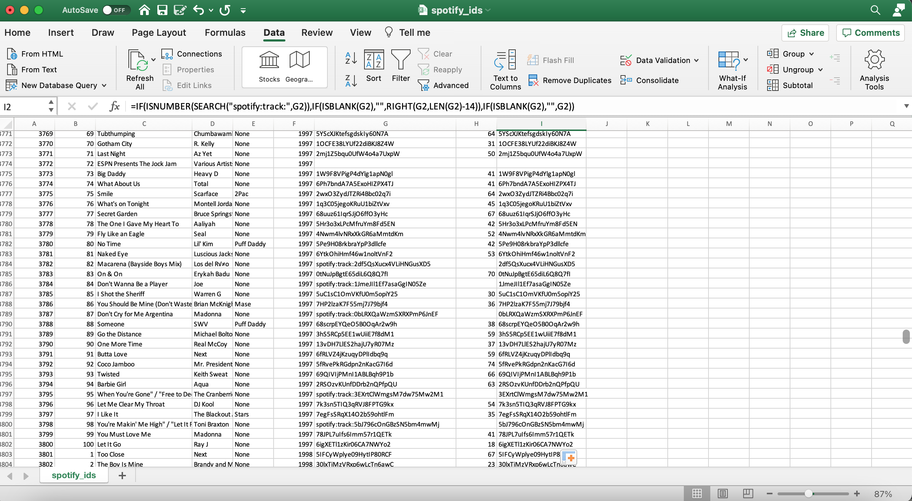

Billboard Year-End Charts Analysis
The Billboard Year-End chart is a chart published by Billboard each year that displays yearly rankings of the top 100 songs, which are determined by the Billboard company themself. But does Billboard really rank their charts based on measures such as popularity, as they claim?
To view the project with all the source code, click here. For the GitHub repository, click here.
Data source: https://en.wikipedia.org/wiki/Billboard_Year-End_Hot_100_singles_of_1960 (replace 1960 with any year between 1960-2020)
Brief Overview
Every year, Billboard releases chart rankings of the top 100 songs of the year. Each billboard chart year starts and ends around the month of December. According to Billboard, rankings are determined based on factors such as sales, amount of streams on music streaming services such as Spotify, and how frequently songs are played on radio stations. Is this true that Billboard ranks their charts according to these factors?
In this project, I collected data of every song that has appeared on the Billboard Year-End charts from years 1960-2020, along with measures such as popularity and other audio features of each song, to answer the question above. I also used the collected data to observe if there were any common characteristics among songs that appeared on Billboard charts, if there were any relationships among variables such as the audio features of songs and the year it was ranked on the charts, and to explore which artists and songs appeared most often.
Outline of Analysis:
- Web Scraping Wikipedia's Billboard Year-End Charts
- Extracting Spotify Ids (using Spotify's API) and cleaning data
- Extracting Spotify Audio Features (using Spotify's API) to add even more data
- Exploring Billboard's Hot 100 Year-End Charts (1960-2020) with visuals
Part 1: Web Scraping Wikipedia's Billboard Year-End Charts
This part extracts song information (rank, title, and artist) from Wikipedia pages for Billboard's Year-End Hot 100 charts for years 1960-2020.
Website: https://en.wikipedia.org/wiki/Billboard_Year-End_Hot_100_singles_of_1960 (Replace 1960 with any desired year between 1960-2020)
Note that there are three years (1963, 1966, 1975) that had an original list, but were revised by Billboard due to errors or recalculations. So the old lists eventually got replaced with a newer list. We will account for these changes and use the revised lists to collect the data in our web scraping.
Import necessary libraries for scraping websites:import csv
import time
import requests
import bs4
# Wikipedia Billboard Year-End pages from 1960-Present follow this format
base_url = "https://en.wikipedia.org/wiki/Billboard_Year-End_Hot_100_singles_of_{}"
Below is the code used to web scrape information:
# initizialize empty list
song_list = []
# loop through each year and extract relevant song information to list
for year in range(1960,2020):
res = requests.get(base_url.format(year))
soup = bs4.BeautifulSoup(res.text, "lxml")
# break out of loop if website technical issues occur
if res.status_code != 200:
print("ERROR. CANNOT SCRAPE ANYMORE.")
break
# select revised list if it exists, else get the original list
try:
selection = soup.select('.wikitable')[1]
except:
selection = soup.select('.wikitable')[0]
tr = selection.select('tr')
# add each row to song list
for item in tr[1:]:
row_list = []
# append rankings
rank = item.select('td')[0].text
row_list.append(rank)
# append song titles
title = item.select('td')[1].text
row_list.append(title.strip('"'))
# append song artists
artist = item.select('td')[2].text
row_list.append(artist.strip('\n'))
# append Billboard year
row_list.append(year)
# append row with all of the data above
song_list.append(row_list)
# slowdown to avoid making quick requests
time.sleep(5)
Let's output the first 5 rows and last 5 rows of our list of scraped data.
First 5 rows: [['1', 'Theme from A Summer Place', 'Percy Faith', 1960], ['2', "He'll Have to Go", 'Jim Reeves', 1960], ['3', "Cathy's Clown", 'The Everly Brothers', 1960], ['4', 'Running Bear', 'Johnny Preston', 1960], ['5', 'Teen Angel', 'Mark Dinning', 1960]]
Last 5 rows: [['96', 'Eyes on You', 'Chase Rice', 2019], ['97', 'All to Myself', 'Dan + Shay', 2019], ['98', 'Boyfriend', 'Ariana Grande and Social House', 2019], ['99', 'Walk Me Home', 'Pink', 2019], ['100', 'Robbery', 'Juice Wrld', 2019]]
Seems like everything is working correctly. We still need song information for the year 2020, so we'll go ahead and do that now using similar code as above, but accounting for the different HTML formatting used in the Wikipedia page for the year 2020. If we check the first and last 5 rows of the 2020 list, it seems like everything is working as intended.
First 5 rows: [['1', 'Blinding Lights', 'The Weeknd', 2020], ['2', 'Circles', 'Post Malone', 2020], ['3', 'The Box', 'Roddy Ricch', 2020], ['4', "Don't Start Now", 'Dua Lipa', 2020], ['5', 'Rockstar', 'DaBaby featuring Roddy Ricch', 2020]]
Last 5 rows: [['96', 'More Than My Hometown', 'Morgan Wallen', 2020], ['97', "Lovin' on You", 'Luke Combs', 2020], ['98', 'Said Sum', 'Moneybagg Yo', 2020], ['99', 'Slide', 'H.E.R. featuring YG', 2020], ['100', 'Walk Em Down', 'NLE Choppa featuring Roddy Ricch', 2020]]
With our final procedure, we will put everything we gathered together into a csv file called wikipedia_scraper.csv.
| rank | title | artist | year |
|---|---|---|---|
| 1 | Theme from A Summer Place | Percy Faith | 1960 |
| 2 | He'll Have to Go | Jim Reeves | 1960 |
| ... | ... | ... | ... |
| 99 | Slide | H.E.R. featuring YG | 2020 |
| 100 | Walk Em Down | NLE Choppa featuring Roddy Ricch | 2020 |
Part 2: Extracting Spotify Ids (using Spotify's API) and cleaning data
In this part, Spotify URIs (Spotify ids) will be extracted using web developer tools from Spotify's Web API. With these Spotify URIs, we can retrieve song feature information such as the song's popularity, duration, loudness, etc.
Documentation of Spotify's Web API: https://developer.spotify.com/documentation/web-api/
Imports:import pandas as pd
# for using Spotify Web API
import spotipy
from spotipy.oauth2 import SpotifyClientCredentials
Start by reading the csv file we used for web scraping songs and artists.
music_data = pd.read_csv('wikipedia_scraper.csv', encoding='ISO-8859-1')Taking a look at first 5 rows of csv file:
| rank | title | artist | year | |
|---|---|---|---|---|
| 0 | 1 | Theme from A Summer Place | Percy Faith | 1960 |
| 1 | 2 | He'll Have to Go | Jim Reeves | 1960 |
| 2 | 3 | Cathy's Clown | The Everly Brothers | 1960 |
| 3 | 4 | Running Bear | Johnny Preston | 1960 |
| 4 | 5 | Teen Angel | Mark Dinning | 1960 |
Spotify Web API
Before we can start using Spotify's Web API, we need to link Spotify to an application. I already created my own application on the website, and will save the application's client id and client secret to a file I created called Spotify.txt. Then I will save these information so that Spotify can authenticate access to their Web API.
file = 'Spotify.txt'
# store client id and client secret
with open(file,'r') as f:
f = f.read().splitlines()
cid = f[0]
secret = f[1]
# authenticate requests to the Spotify Web API
client_credentials_manager = SpotifyClientCredentials(client_id=cid, client_secret=secret)
sp = spotipy.Spotify(client_credentials_manager=client_credentials_manager)With authentication permitted, we will use artist name and song title from our dataframe to attempt and search for the corresponding Spotify URI. After doing so, we obtain the following table:
| rank | title | artist | year | Spotify id | Popularity | |
|---|---|---|---|---|---|---|
| 0 | 1 | Theme from A Summer Place | Percy Faith | 1960 | 6zwvB879PJSpTyFcg2wwnL | 57.0 |
| 1 | 2 | He'll Have to Go | Jim Reeves | 1960 | 7dDE59NX0n466e705E8Itz | 18.0 |
| 2 | 3 | Cathy's Clown | The Everly Brothers | 1960 | 1MA9StLzlFftLbuqOmoWij | 52.0 |
| 3 | 4 | Running Bear | Johnny Preston | 1960 | 1RYznli2VNO7FCbW1Hq4KM | 39.0 |
| 4 | 5 | Teen Angel | Mark Dinning | 1960 | 36NPEs4S7ik50NrlzaqoIJ | 31.0 |
| ... | ... | ... | ... | ... | ... | ... |
| 6096 | 96 | More Than My Hometown | Morgan Wallen | 2020 | 0eBXyY4SatzpE7opnzgXvz | 83.0 |
| 6097 | 97 | Lovin' on You | Luke Combs | 2020 | 0nYvjcSlCgjcwogQAwIwNp | 76.0 |
| 6098 | 98 | Said Sum | Moneybagg Yo | 2020 | 3sKz6Sd72K0ofPWcJPPk6H | 75.0 |
| 6099 | 99 | Slide | H.E.R. featuring YG | 2020 | NaN | NaN |
| 6100 | 100 | Walk Em Down | NLE Choppa featuring Roddy Ricch | 2020 | NaN | NaN |
6101 rows × 6 columns
# Information about data:
music_data.info()<class 'pandas.core.frame.DataFrame'> RangeIndex: 6101 entries, 0 to 6100 Data columns (total 6 columns): # Column Non-Null Count Dtype --- ------ -------------- ----- 0 rank 6101 non-null object 1 title 6101 non-null object 2 artist 6101 non-null object 3 year 6101 non-null int64 4 Spotify id 4950 non-null object 5 Popularity 4950 non-null float64 dtypes: float64(1), int64(1), object(4) memory usage: 286.1+ KB
# checking for amount of null values in Spotify id column
music_data['Spotify id'].isnull().sum()1151
Splitting the artist column
There are a lot of songs without a Spotify id (1151 total). One reason why the Spotify ids for these songs were not extracted is because the get_spotify_data function does not recognize artists in the artist column that have multiple artists. These data contain strings such as "featuring", "and", and "&", so we'll split the artists into multiple columns that contain the primary artist and featured artists. Then we'll reattempt and get the Spotify ids along with the song popularity.
| rank | title | artist | other artists | year | Spotify id | Popularity | |
|---|---|---|---|---|---|---|---|
| 0 | 1 | Theme from A Summer Place | Percy Faith | None | 1960 | 6zwvB879PJSpTyFcg2wwnL | 57.0 |
| 1 | 2 | He'll Have to Go | Jim Reeves | None | 1960 | 7dDE59NX0n466e705E8Itz | 18.0 |
| 2 | 3 | Cathy's Clown | The Everly Brothers | None | 1960 | 1MA9StLzlFftLbuqOmoWij | 52.0 |
| 3 | 4 | Running Bear | Johnny Preston | None | 1960 | 1RYznli2VNO7FCbW1Hq4KM | 39.0 |
| 4 | 5 | Teen Angel | Mark Dinning | None | 1960 | 36NPEs4S7ik50NrlzaqoIJ | 31.0 |
| ... | ... | ... | ... | ... | ... | ... | ... |
| 6096 | 96 | More Than My Hometown | Morgan Wallen | None | 2020 | 0eBXyY4SatzpE7opnzgXvz | 83.0 |
| 6097 | 97 | Lovin' on You | Luke Combs | None | 2020 | 0nYvjcSlCgjcwogQAwIwNp | 76.0 |
| 6098 | 98 | Said Sum | Moneybagg Yo | None | 2020 | 3sKz6Sd72K0ofPWcJPPk6H | 75.0 |
| 6099 | 99 | Slide | H.E.R. | YG | 2020 | 2rTnVB1bvwxHtaIl4uVu7f | 77.0 |
| 6100 | 100 | Walk Em Down | NLE Choppa | Roddy Ricch | 2020 | 4cSSL3YafYjM3yjgFO1vJg | 80.0 |
6101 rows × 7 columns
# information about data:
music_data.info()<class 'pandas.core.frame.DataFrame'> RangeIndex: 6101 entries, 0 to 6100 Data columns (total 7 columns): # Column Non-Null Count Dtype --- ------ -------------- ----- 0 rank 6101 non-null object 1 title 6101 non-null object 2 artist 6101 non-null object 3 other artists 6101 non-null object 4 year 6101 non-null int64 5 Spotify id 5690 non-null object 6 Popularity 5690 non-null float64 dtypes: float64(1), int64(1), object(5) memory usage: 333.8+ KB
# check for amount of null values from Spotify id column
music_data['Spotify id'].isnull().sum()411
Dealing with the remaining, missing Spotify ids
We dropped the amount of null values from 1151 to 411. At this point, there's nothing else we can do with python to extract the remaining Spotify ids, so the rest must be done manually (using Excel).
Below is the Excel file for spotify_ids.csv. We can see that row 7 (with artist Brenda Lee), for example, has missing information.

We can then use Excel's filter tool to filter by rows with missing Spotify ids, and then use Spotify to look up the ids for each of these songs.

So most songs should have a Spotify id now. However, in the image below, there are still very few rows with missing information. Also, in column G, some rows have ids that start with "spotify:track:" and other rows without it. We'll add in another column that will remove "spotify:track" in the id, if it exists, and keep all other rows as is with either the original id or blank information using a rather long Excel formula.
To understand the formula used, it checks and searches if the phrase "spotify:track" exists in the cell for G2 or not. If it does, then it will insert the id into a new cell while removing the phrase "spotify:track". If cell G2 does not contain the phrase "spotify:track", then it will check if the cell is blank or not. If the cell is blank, then the new cell will be blank, and if not, then the original id will be inserted into the new cell.
As a result of the formula, it will look something like cell I2. We can then use the autofill feature to fill in the rest of the column.

After manually inserting Spotify ids and doing some cleaning in Excel, we import the csv file.
new_music_data = pd.read_csv('spotify_ids.csv', encoding='ISO-8859-1')
# information about data
new_music_data.info()<class 'pandas.core.frame.DataFrame'> RangeIndex: 6101 entries, 0 to 6100 Data columns (total 9 columns): # Column Non-Null Count Dtype --- ------ -------------- ----- 0 Unnamed: 0 6101 non-null int64 1 rank 6101 non-null object 2 title 6101 non-null object 3 artist 6101 non-null object 4 other artists 6101 non-null object 5 year 6101 non-null int64 6 Spotify id 6098 non-null object 7 Popularity 5690 non-null float64 8 Spotify id.1 6098 non-null object dtypes: float64(1), int64(2), object(6) memory usage: 429.1+ KB
new_music_data.isnull().sum()Unnamed: 0 0 rank 0 title 0 artist 0 other artists 0 year 0 Spotify id 3 Popularity 411 Spotify id.1 3 dtype: int64
We see that there are 3 rows without a Spotify id. Let's check what these rows are.
| Unnamed: 0 | rank | title | artist | other artists | year | Spotify id | Popularity | Spotify id.1 | |
|---|---|---|---|---|---|---|---|---|---|
| 2182 | 2182 | 82 | It's Now or Never | John Schneider | None | 1981 | NaN | NaN | NaN |
| 2297 | 2297 | 97 | Goin' Down | Greg Guidry | None | 1982 | NaN | NaN | NaN |
| 3772 | 3772 | 72 | ESPN Presents The Jock Jam | Various Artists | None | 1997 | NaN | NaN | NaN |
Removing rows with missing information
There are still 3 Spotify ids that are missing. Since these are just a very small portion of our entire dataset, it should be okay to just drop these rows.
After dropping the 3 rows, we now have no more rows with missing Spotify ids. We just need to deal with missing Popularity information.
new_music_data.isnull().sum()Unnamed: 0 0 rank 0 title 0 artist 0 other artists 0 year 0 Spotify id 0 Popularity 408 Spotify id.1 0 dtype: int64
Cleaning dataframe
But first, let's clean the columns with our new dataframe by dropping the index column and old spotify id column, renaming columns, and reordering the columns.
| rank | title | artist | other artists | year | Spotify id | Popularity | |
|---|---|---|---|---|---|---|---|
| 0 | 1 | Theme from A Summer Place | Percy Faith | None | 1960 | 6zwvB879PJSpTyFcg2wwnL | 57.0 |
| 1 | 2 | He'll Have to Go | Jim Reeves | None | 1960 | 7dDE59NX0n466e705E8Itz | 18.0 |
| 2 | 3 | Cathy's Clown | The Everly Brothers | None | 1960 | 1MA9StLzlFftLbuqOmoWij | 52.0 |
| 3 | 4 | Running Bear | Johnny Preston | None | 1960 | 1RYznli2VNO7FCbW1Hq4KM | 39.0 |
| 4 | 5 | Teen Angel | Mark Dinning | None | 1960 | 36NPEs4S7ik50NrlzaqoIJ | 31.0 |
| ... | ... | ... | ... | ... | ... | ... | ... |
| 6096 | 96 | More Than My Hometown | Morgan Wallen | None | 2020 | 0eBXyY4SatzpE7opnzgXvz | 83.0 |
| 6097 | 97 | Lovin' on You | Luke Combs | None | 2020 | 0nYvjcSlCgjcwogQAwIwNp | 76.0 |
| 6098 | 98 | Said Sum | Moneybagg Yo | None | 2020 | 3sKz6Sd72K0ofPWcJPPk6H | 75.0 |
| 6099 | 99 | Slide | H.E.R. | YG | 2020 | 2rTnVB1bvwxHtaIl4uVu7f | 77.0 |
| 6100 | 100 | Walk Em Down | NLE Choppa | Roddy Ricch | 2020 | 4cSSL3YafYjM3yjgFO1vJg | 80.0 |
6098 rows × 7 columns
Filling in the missing popularity data
Let's fill in the missing data with popularity information using Spotify's Web API.
popularities = []
for id_ in new_music_data['Spotify id']:
feature = sp.track(id_)['popularity']
popularities.append(feature)
new_music_data['Popularity'] = popularities# count amount of missing values
new_music_data.isnull().sum()rank 0 title 0 artist 0 other artists 0 year 0 Spotify id 0 Popularity 0 dtype: int64
There are no more missing values in our dataframe, so let's go ahead and save this into our csv file called spotify_ids.csv.
Part 3: Extracting Spotify Audio Features (using Spotify's API) to add even more data
Get in touch
Feel free to contact me for any questions or comments.